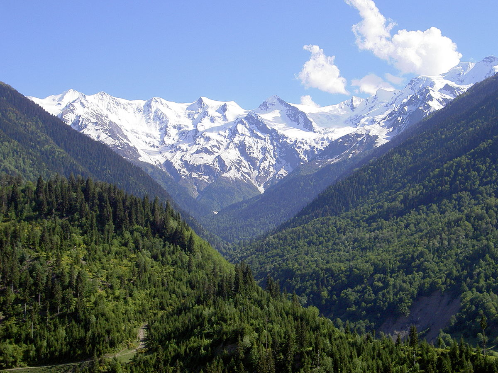

GoGeo არის ტურისტული კომპანია, რომელიც გთავაზობთ დაუვიწყარ მოგზაურობებს საქართველოში.
ჩვენი მიზანია, უცხოელ და ქართველ მოგზაურებს შევთავაზოთ უნიკალური გამოცდილება – ისტორიული
ქალაქები, ულამაზესი მთები, შავი ზღვის სანაპირო, ტრადიციული სამზარეულო და ქართული
სტუმართმოყვარეობა.
ჩვენთან ერთად თქვენ აღმოაჩენთ საქართველოს ნამდვილ სახეს – კულტურას,
ბუნებას და ტრადიციებს, რომელიც საუკუნეების მანძილზე ჩამოყალიბდა.
ძვირფასო მგზავრო,ახლა გაგიჩნდება კითვა თუ რატომ საქართელო,მე კი გიპასუხებ
საქართველო არის პატარა ქვეყანა, მაგრამ უსაზღვროდ მდიდარი ბუნებითა და კულტურით.
კავკასიონის მთები
იდეალური ადგილია მთამსვლელობისთვის, სათხილამურო ტურებისთვის
და ბუნებაში დასასვენებლად.

ღვინის სამშობლო
8000-წლიანი ღვინის ისტორია, უნიკალური ვენახები და მარანები,
არაჩვეულებრივი ღვინოები .თქვენ მოგეცემათ საშუალება დააგემოვნოთ და დატკბეთ ქართული
ღვინოების მრავალფეროვნებით
ისტორიული ძეგლები
და ა. შ
რატომ GoGeo
პერსონალურად მორგებული ტური თითოეული მოგზაურისთვის
პროფესიონალი გიდები ქართულ და უცხო ენებზე
კომფორტული ტრანსპორტი და საიმედო სერვისი
კულტურული, სათავგადასავლო და გასტრონომიული ტურები
მადლობა, რომ გაეცანით GoGeo-ს ტურისტულ კომპანიას
მეტი ინფორმაციისთვისა და ტურების დასაჯავშნად მოგვწერეთ
.jpg)